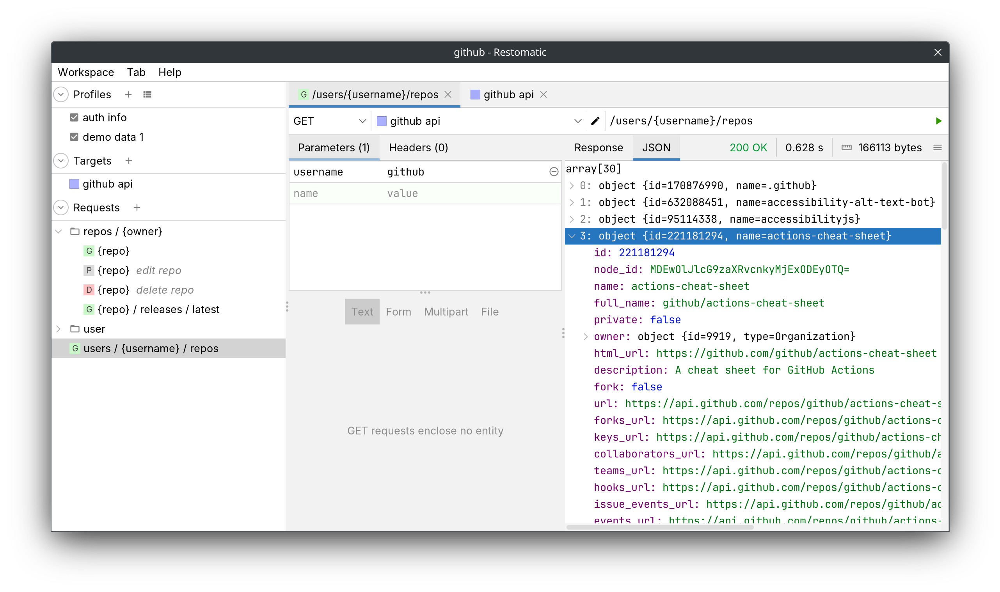
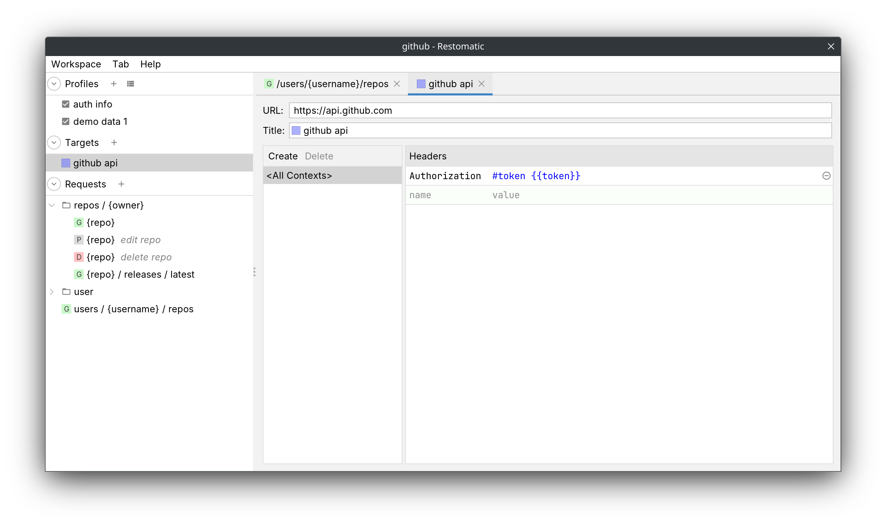

Features
Request templates
- Define path and query parameters.
- Define request headers.
- Support various request body types: text, form, multipart, and file.
- Dynamically organise the request hierarchy as the request path changes.
- Perform seamless searches.
- Use temporary request templates to experiment without modifying the original template.
- View JSON responses as a tree.
Targets
- Define headers to apply to every request sent to a target.
- Assign colors to visually distinguish each target.
- Override headers for specific context paths within a target.
- View and modify cookies received during request execution.
Authenticators
- HTTP Basic authentication.
- Custom authentication scenarios using JavaScript.
Profiles
- Store environment-specific data in profile variables.
- Enable multiple profiles (e.g., "User Joe" and "Target dev2").
- Substitute profile variables using Handlebars expressions.
FAQ
-
How to run Restomatic?
Restomatic requires the latest version of Java 11 to run.
Execute the following command after installing Java Runtime Environment:
java -jar restomatic.jar
-
Does Restomatic collect any user data?
Restomatic regularly checks for updates by querying GitHub for the latest release. A paranoid person might worry that sensitive information is being sent during the update check. But don't worry — just open the application settings (Workspace → Settings) and disable update checks.
-
How can I help?
Feel free to report bugs or feature requests.
-
Is there an example workspace file?
Check this one. This example showcases a subset of GitHub REST API. After opening the workspace file, change the values of the "token" and "userId" parameters inside the "auth info" profile.
Demo
Screenshots

